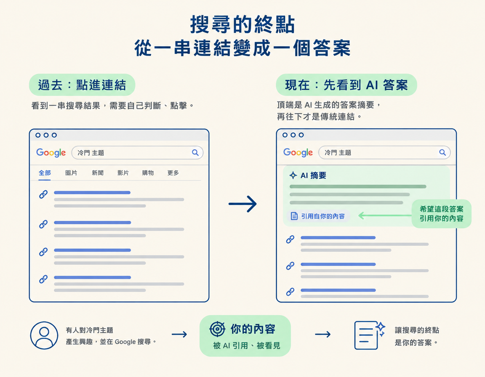

這一節是整條流程的 Step 3/5，接續上一節「平台正在變成搜尋引擎」，說明 caption 如何被搜尋與 AI 使用。你會從 caption 這段文字出發，認識 AEO（答案引擎優化），並分辨它和 SEO 的差異。學完後，你應該能說明為什麼 Google 搜尋結果常出現 AI 答案，以及 caption 為什麼仍值得花心思撰寫。
上一節談到，平台正在變成搜尋引擎，caption 因此成了能被搜尋、被索引的文字。不過，那談的是傳統搜尋：你輸入關鍵字，搜尋引擎回給你一串連結，而你希望自己的內容出現在其中。
但搜尋方式也在改變。這幾年，你在 Google 搜尋時，常會發現最上方出現的不是一串連結，而是一段 AI 整理好的答案。搜尋的終點，正從「一串連結」慢慢變成「一個答案」。這也改變了 caption 的用途，並帶出這一節的主題：AEO。
AEO 是 answer engine optimization 的縮寫，中文常譯為「答案引擎優化」。簡單來說，就是讓 AI agent 或 AI 模型回答使用者問題時，能找到你、引用你。
關鍵在「答案」兩個字。傳統的搜尋引擎優化（SEO）著重於搜尋結果頁：你希望自己的網站排在連結列表前面。AEO 則著重於 AI 生成的回答：當回答提到你的主題時，你希望 AI 引用的是你的內容。目標不同，寫法自然也會不同。
這種情況現在就可能遇到，不是什麼遙遠的未來。你在 Google 搜尋時，視所在的地區而定，可能會在最上方看到一段 AI 答案。使用者甚至還沒點進網站，就先從 AI 那裡得到一個回答。
想像你專注在一個冷門又具體的主題。有個人也對這件事著迷，於是上 Google 搜尋。過去，他會先看到一串連結；你希望他點進你的內容。現在，他可能先看到 AI 整理好的答案。這時，你希望那段答案提到你、引用你的內容，而不是只引用別人。

把這件事和上一節連起來看：Google 會索引 YouTube，也會索引 Instagram 的 caption。這一節再往前一步，指出這些文字被索引後，也有機會成為 AI 生成答案的材料。因此，caption 多了一個任務：不只是讓人搜尋得到，也要讓 AI 有機會引用。
把兩者並排比較，差異就清楚多了：
| 面向 | SEO（搜尋引擎優化） | AEO（答案引擎優化） |
|---|---|---|
| 面對的對象 | 搜尋結果頁 | AI 生成的答案 |
| 想達成的結果 | 排在連結列表前面 | 被 AI 答案引用或提及 |
| 使用者看到的內容 | 一串可以點擊的連結 | 一段直接給出結論的回答 |
| 主要做法 | 爭取搜尋排名 | 把內容寫得清楚，讓 AI 有理由引用 |
對準備內容的人來說，這裡有個重要差異：排名是一種零和競爭，你往前，別人就往後；而「被引用」更像是在看你有沒有把主題說清楚，讓 AI 願意採用你的內容。
所以，面對 AI 答案時，與其只和別人搶位置，不如把內容寫得具體、容易辨認，讓 AI 在需要相關資訊時有機會想到你。
回到 caption。既然 Google 會索引 YouTube 和 Instagram 的 caption，而 AI 也會使用這些被索引的文字來生成答案，那麼 caption 裡清楚的主題與名詞，就可能成為搜尋引擎和 AI 理解、引用內容的線索。
這就是 caption 值得重新認真看待的原因。即使它不再是流量的主要來源，也仍是你能提供給搜尋引擎與 AI 的一份文字資料。
具體要怎麼寫，留到下一節再談。現在先記住這個觀念：AEO 的目標不是搶排名，而是讓內容有機會被引用；caption 則是你能掌握的文字來源之一。
AEO 是 answer engine optimization，也就是答案引擎優化；它的目標是讓 AI agent 或 AI 模型回答使用者問題時，能找到你、引用你。這個觀念之所以重要，是因為 Google 搜尋結果的最上方常會出現 AI 直接提供的答案，而不只是一串連結。SEO 著重爭取排名，AEO 則著重讓內容清楚到值得被引用。caption 會被 Google 索引，也可能成為 AI 生成答案的文字來源之一，因此仍值得認真撰寫。
觀念釐清後，下一節會把 AEO 拆成四條可實際運用的寫作規則：指名工具、讓每行內容都能獨立成立、放入真實數字，以及加入「Questions we answered」區塊。
GEO（generative engine optimization，生成式引擎優化）研究論文：arxiv.org，是這波「讓 AI 引用你」思維背後的學術源頭。
Google 官方談 AI 功能與網站（AI features and your website）：developers.google.com，說明要出現在 AI 答案裡，並不需要做什麼特別的事。